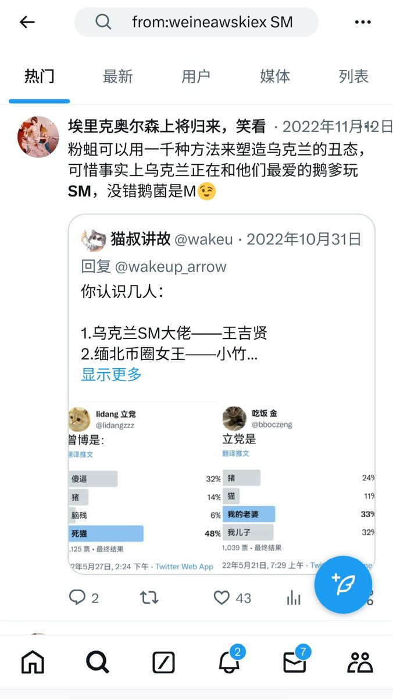
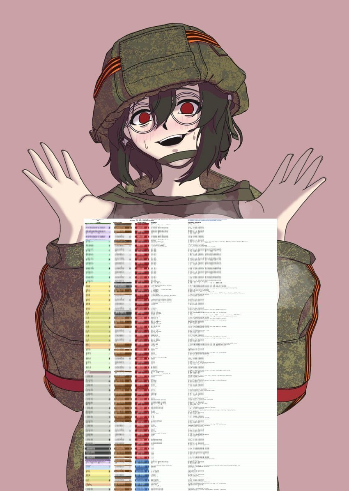

❂🇩🇪🇪🇺🌹𝐀𝐬𝐡𝐥𝐞𝐲 𝐁𝐥𝐨𝐜𝐤🍥🇹🇼🏳️⚧️❀
@bolckAshley
RT @WeineawskiEX: 猫畜讲故事可以用一千种方式来丑化乌克兰。
不过可惜的是，当猫叔试图用SM来对乌克兰进行荡妇羞辱时，乌军正在和俄军玩真人SM的游戏。
只不过乌军是S，俄军是M。


埃里克奥尔森上将归来，笑看鹅孝子土崩瓦解，黄／皇鹅被送上绞刑架之日即将到来🇵🇸 🇮🇱
@WeineawskiEX
猫畜讲故事可以用一千种方式来丑化乌克兰。
不过可惜的是，当猫叔试图用SM来对乌克兰进行荡妇羞辱时，乌军正在和俄军玩真人SM的游戏。
只不过乌军是S，俄军是M。 https://t.co/4TH0h3TRV4 https://t.co/y8i83TJteN